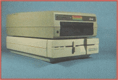
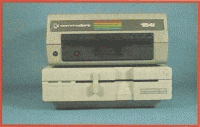
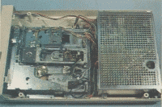
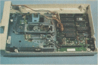
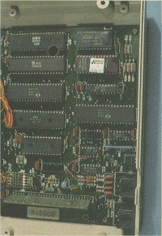
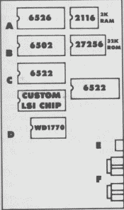
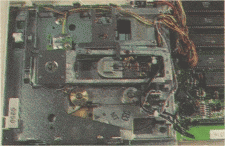
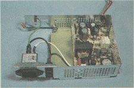

By Morton Kevelson
READER SERVICE NO. 101
|  |
|  |
| How the 1541 and 1571 drives stack up. |
After taking a close look at the capabilities of our 1571 prototype, we have been very favorably impressed. In most areas operating speed has been improved, as much as nine times for a straight LOAD. Even faster performance can be obtained under certain conditions. Commodore also appears to have learned their lessons on the 1541 very well, as careful attention has been given to previously troublesome hardware details.
To fulfill its primary purpose of supporting the Commodore 128 computer, the 1571 has two distinct personalities. As a Commodore drive it behaves very much like a double sided 1541 disk drive. Formatting a disk (a 43 second process) results in tracks 1 to 35 being laid down on side 0, the same as on the 1541. The flip side, side 1, contains tracks 36 to 70. Note that side 0, the side which the 1541 uses, is the underside of the disk when it is placed on a surface with the label facing up. As expected, double siding the disk also doubles the overall data storage capability. However, not all of the drive capacities are doubled.
Total disk capacity for a Commodore formatted disk is now up to 349,696 bytes. A look at the directory of a disk freshly formatted on a 1571 shows a total of 1328 blocks free. The maximum size of a sequential file has been increased to a total of 337,312 bytes. A file this size will span both sides of the disk. Interestingly enough, the maximum size of a relative file is 167,132 bytes, the same as on the 1541.
Track 18 on side 0 is reserved for the block availability map (BAM) and the disk directory. The BAM tells the disk drive which sectors have been reserved for data storage. Sector zero of this track contains the BAM for both sides of the disk. A separate copy of the BAM for side 1 is maintained in sector 0 of track 53. The capacity of the directory is limited to 144 file entries, as on the 1541, although the remainder of track 53 does not appear to be used for any purpose.
Much work appears to have gone into the built-in disk operating system (DOS), so much so that Commodore has upgraded the DOS version to number 3.0. This is puzzling, as DOS 3.0 is also used in the Commodore D9060 and D9090 hard disk units. The most recent DOS for a Commodore floppy disk unit was version 2.7 on the 8250 dual drive and its SFD 1001 single drive counterpart. The latest revision on the 1541 is DOS 2.6.
With regard to operating speed we have some good news. As mentioned above, formatting time for both sides of the disk is only 43 seconds. Program loading time, when used with a C-128, has been speeded up by a factor of nine as compared to a C-64 with a 1541 disk drive. The following table shows the result of some simple benchmarks tests:
| C-64/1541 | C-128/1571 | ||
|---|---|---|---|
| 30K LOAD | 77 Sec. | 8.5 Sec. | |
| 30K SAVE | 87 Sec. | 58 Sec. | |
| 40K SEQ FILE | |||
| Read & Write | 230 Sec. | 145 Sec. | |
| Read Only | 112 Sec. | 45 Sec. | |
| Write Only | 120 Sec. | 100 Sec. | |
| REL File | 271 Sec. | 280 Sec. | |
The sequential file tests were conducted by running the following BASIC program:
10 REM DISK DRIVE TIMING
20 REM SEQUENTIAL FILE BENCHMARK
30 A$="ABCDEFGHIJK"
40 FORI=1T08
50 B$=B$+A$
60 NEXT
70 OPEN8,8,8,"SEQ FILE TEST,S,W"
80 FORI=1T0460
90 PRINT#8,B$
100 NEXTI
110 CLOSE8
120 OPEN8,8,8,"SEQ FILE TEST,S,R"
130 FORI=1T0460
140 INPUT#8,B$
150 NEXTI
160 CLOSE8
The relative file test consisted of creating a file with 512 records where each record was 254 bytes. Only the last record was written to.
These timing tests are only part of the story. The 1571 has a "burst" mode which should result in much faster data transfer rates between the disk drive and a C-128. The burst mode is recommended only for non-critical data, such as bit maps, where a data error is not fatal. The high speeds used by the burst mode leave little time for DOS error checking routines. Commodore 64 users will not be able to take advantage of the faster operating speeds without special software. The C-64 operating system does not have the required routines. Using a 1571 with a C-64 will not give any speed advantage, although the extra disk capacity will still be available.
The discussion until this point has centered about the Group Code Recording (GCR) scheme which is virtually unique to Commodore formatted disks. The 1571's second personality gives it the ability to format disks using modified frequency modulation (MFM) double density recording techniques. This format has been adopted by a large segment of the personal computer community, most notably by many CP/M machines. Even in this case there are variations among machines, most notably in the total capacity of a formatted disk. This can be related directly to the number of bytes in a disk sector.
The 1571 has considerable flexibility with the MFM format. Sector capacity can vary from 128 bytes up to 1024 bytes. The following table shows the possible combinations.
| Sector Capacity | # of Sectors per Track | Disk Capacity* |
|---|---|---|
| 128 Bytes | 26 | 260K |
| 256 Bytes | 16 | 320K |
| 512 Bytes | 9 | 360K |
| 1024 Bytes | 5 | 400K |
| *Formatted capacity for a double sided disk. | ||
The MFM formats, as well as the high speed burst mode, are accessed via a new direct disk command, UO. The preliminary documentation indicated that mixing of the various MFM and GCR formats was possible on a single disk. Even formatting of single tracks is possible. These prospects are sure to gladden the hearts of many copy protection enthusiasts.
We will report on CP/M on the C-128 with the 1571 in the near future. As of this writing (mid-June) Commodore has not released the CP/M operating system and support utility disks.
|  |  |
| The 1571 drive with its lid removed. The power supply is on the right. | Main circuit board rests below power supply and drive mechanism. |
Although the 1571 is a double sided drive, it is still fully capable of reading and writing single sided disks formatted on a 1541 disk drive. When working within C-128 mode, the drive initially assumes that the disk is double sided. If a single sided disk is inserted it takes the drive about 15 seconds to convince itself that the second side is blank. Once done, all subsequent reads and writes are done in single sided mode. Unfortunately this second side checking routine occurs every time disks are swapped. The 15 second delay could become annoying if single sided format disks are frequently mixed with double sided disks.
Double sided disks are filled on side 0 first. If you use a 1541 with a double sided disk you will not be able to access the second side. Flipping the disk will not work as the rotation is reversed. In addition, the track numbers run from 36 to 70. These are illegal as far as the 1541 DOS is concerned. The real difficulty is when a 1571 is added to an existing C-64 system. As the disk fills, files will spill over to the second side. Trying to read one of these on a 1541 will return an illegal track or sector error. The 1541 does not recognize track numbers greater than 35.
When the 1571 is connected to a C-64 it reverts to 1541 mode. Under these conditions the drive will not read the second side of a double sided disk. Even formatting time reverts to 70 seconds for a single side! Compatibility with 1541 software is very good. All the standard DOS commands function as before. Nearly all of the copy protected disks we tried LOADed without any difficulty.
|  |  |
| Closeup of the main circuit board. See key at right for chip layout. | 1571 MAIN CIRCUIT BOARD LAYOUT A - CIA CHIP B - MICROPROCESSOR C - VIA CHIP D - MFM DISK DRIVE CONTROLLER E - DEVICE NUMBER SELECTION SWITCH F - SERIAL PORT CONNECTORS |
The internal works consist of three modules, two for the drive electronics and one for the hardware. The power supply module is completely contained in a perforated metal cage located directly above the main circuit board. This mounting position insures that heat dissipation will be away from the main electronics. The major heat generating components are the twin voltage regulators and transformer on the left side. These supply the five volt DC and twelve volt DC requirements for the drive. The 120 volt supply line is fully filtered.
The heart of the drive electronics is a 6502A microprocessor with 32 kilobytes of disk operating system in ROM supported by two kilobytes of RAM. A 6526 CIA chip and a 6522 VIA chip handle the I/O requirements. The Commodore format GCR recording is handled by a custom large scale integrated circuit. The MFM recording for CP/M format disks is taken care of by a Western Digital WD1770 chip.
|  |  |
| Closeup of drive mechanism, which incorporates a brushless DC motor. | A closeup and inside view of the 1571 disk drive's power supply. |
As with all of Commodore's disk drives, the design of the 1571 is revolutionary. For the end user the most significant improvement is the incorporation of an optical sensor for the track one head position. This should virtually eliminate the alignment problems which plagued the 1540/ 1541 disk drives. The mechanical stops are still present but they are not normally used. The disk operating system arrests head movement at the track one position when formatting a disk or error checking as might be done with some forms of copy protection.
To insure proper seating of the disk, the 1571 spins the drive spindle every time a disk is inserted or removed. This operation is triggered by the write protect sensor. Of course, the same electronics also inform the DOS whenever a disk is swapped.
The 1571 is a double sided drive. Two heads (which in this case are definitely better than one) are provided to accommodate the storage of data on both sides of the floppy surface. These are situated in diametrically opposing positions so as to sandwich the floppy medium between them. These hard, highly polished, precision surfaces must never make contact lest their finish be marred. A mechanical interlock has been incorporated into the latch mechanism for this very purpose. The heads will remain in the open position unless a disk is inserted to trigger the interlock. This is true regardless of the position of the external operating lever.
Head cleaning, for those who shun the costly cleaning kits, requires a minimum of disassembly. Simply remove the top cover to gain access to the heads. As can be seen from the photographs, the power supply and the main electronics board are situated behind and below the drive mechanicals. There is no need to remove any of these components to clean the heads. Do not attempt to force the upper head support arm beyond its mechanical stop. Movement is rather restricted as compared to the design on the 1541. A good-quality clean cotton swab, moistened with isopropyl alcohol (91%), does the job. As with all component disassembly, we caution our readers to use their own good judgment. Opening of the disk drive may void the warranty. If you have any doubts on your ability to handle this work, leave it for a qualified service technician.
The drive mechanism is manufactured by Newtronics/Mitsumi Electric Co. Ltd. It incorporates a brushless direct drive DC motor for spinning the disk. The motor control electronics are on a circuit board which surrounds the armature.
As expected, the back panel includes a pair of serial ports to allow daisy chaining of peripherals, the main power socket, and the on/off switch. A significant new addition is a pair of miniature switches right next to the serial port connectors. These allow the selection of device numbers 8 through 11. Interestingly enough, the preliminary documentation still talks about the cutting of internal jumpers to change device numbers.
In addition to the mandatory disk slot, the front panel sports a twist lock door latch and a pair of colored indicating lights. For some reason Commodore has departed from their previous color scheme. In direct opposition to the 1541 the power on light is red and the drive indicator light is green.
Judging from the draft copy of the manual, users will be in for a pleasant surprise. Although it is directed to the reader with some knowledge of BASIC, the manual contains a lot more information than the early editions of the 1541 book. Carefully written explanations with numerous detailed examples are sprinkled throughout the text. The draft manual is over sixty pages, with two more chapters yet to come.
Numerous tidbits of information have been included. Many of these were apparently gleaned from the pages of the various Commodore publications. Commodore has even officially named the ignominious asterisk file as a "splat" file. Splat files occur when a file is opened and not properly closed by the DOS. They list in the directory with an asterisk next to their file names. As many a user has woefully found out, they can foul up a disk if not properly treated. Details for their cure are now an official part of the 1571 manual.
The 1571 disk drive makes an excellent companion to the C-128. The system provides all of the features Commodore users have been looking for since the introduction of the VIC 20. Much has been done to improve on the marginal performance of the serial bus as implemented on the 1541. (This bus was actually a low cost compromise which allowed the C-64 to appear on the market in a hurry.)
The flexibility of the 1571's operating modes will be put to full use by the CP/M 3.0 Plus operating system. Several popular disk formats will be directly supported or easily accessed by a set of simple keyboard commands. In particular, the supported formats are:
Additional formats are possible but will require special programming of the 1571 disk drive. In all cases data files may be transferred between the Commodore 128 and the respective machines. Of course, you cannot run IBM programs since CP/M 3.0 runs on an eight bit Z-80 microprocessor while CP/M-86 runs on a 16 bit 8088 microprocessor.
The 1571 is only the first step in high quality peripheral support for the C-128. Work is already well under way on the 1572, a dual drive version of the 1571. It also would not surprise us to see a Commodore 3 1/4 inch hard disk with a 10 to 20 megabyte capacity for under $500 in the near future. This combination of features with low cost is sure to encourage many existing Commodore users into the upgrade path. We also expect to welcome many new users into the Commodore fold.
Published in Ahoy!, Issue 21, September 1985. Copyright © 1985 Ion International, Inc.
| This page has been created by Sami Rautiainen. | |
| Read the small print. | Last updated September 05, 2020. |